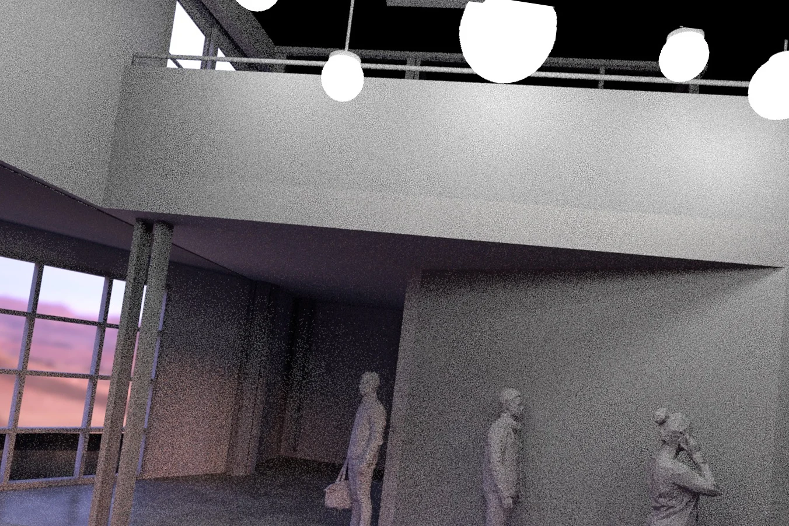
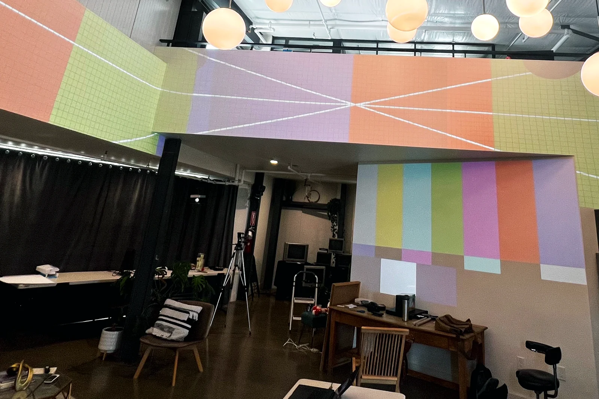

Mycopop launch environment
For Mycopop's product launch, we created visuals for the walls and a game guests could play on a large projection. We modeled the room, made the content, and set up and calibrated the projection on site.
View the projectHigher Roads is an art and technology studio in Nashville. We create projection, visual content, and interactive experiences for events, venues, and installations.
See the work
We help turn an idea for a space or event into something people can see and interact with. Our work can include visual content, projection, custom software, and the setup needed to bring those parts together.
For Mycopop's product launch, we created visuals for the walls and a game guests could play on a large projection. We modeled the room, made the content, and set up and calibrated the projection on site.
View the project

We start by talking through what you want to make and where people will experience it.
We look at the space, the audience, and the practical limits of the project before deciding what to build. That helps us work out which parts need content, projection, screens, software, or interaction.
From there, we develop the content and any systems it needs, then test and set them up in the space.
We’re developing Meridian to help creative teams keep track of priorities, approvals, versions, and handoffs during live media projects.
In developmentAura brings a company’s brand knowledge into a creative workspace, where teams can refer to it as they plan and make new work.
View AuraInternal experiment
Rabbit Ears is an experiment in making original TV channels for a venue, with the look and feel of analog television. The channels run from a local media box.
We use the Lab to try ideas outside client projects and learn how they work in practice. Some may become tools or find a place in future projects.
We work alongside agencies, fabricators, event producers, creative teams, and venues that need help with projection, interactive content, screens, or live media.
You can bring us in while the idea is taking shape, or ask us to handle a defined part of the project. We can also work under your company’s name when that suits the relationship.
How we work with partners